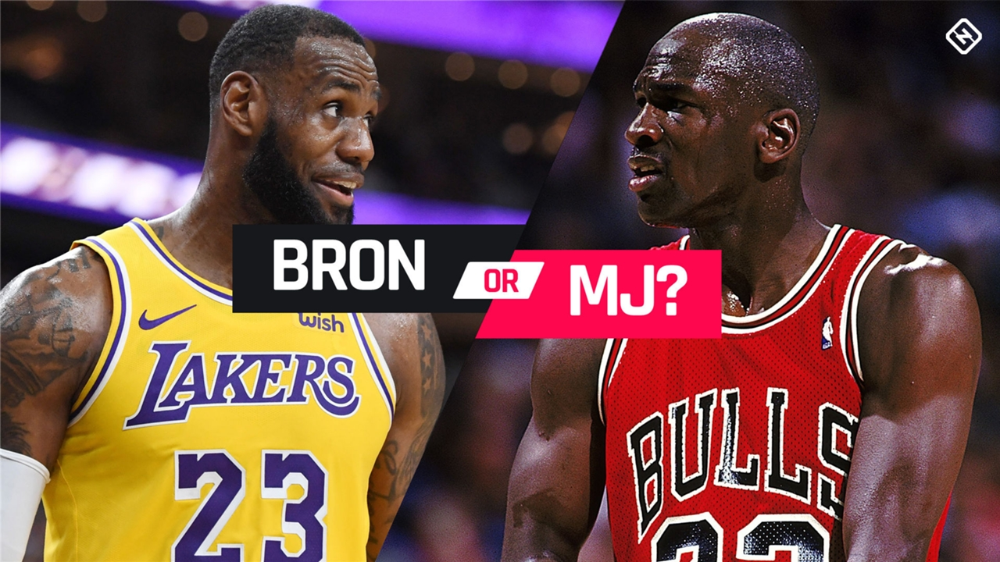
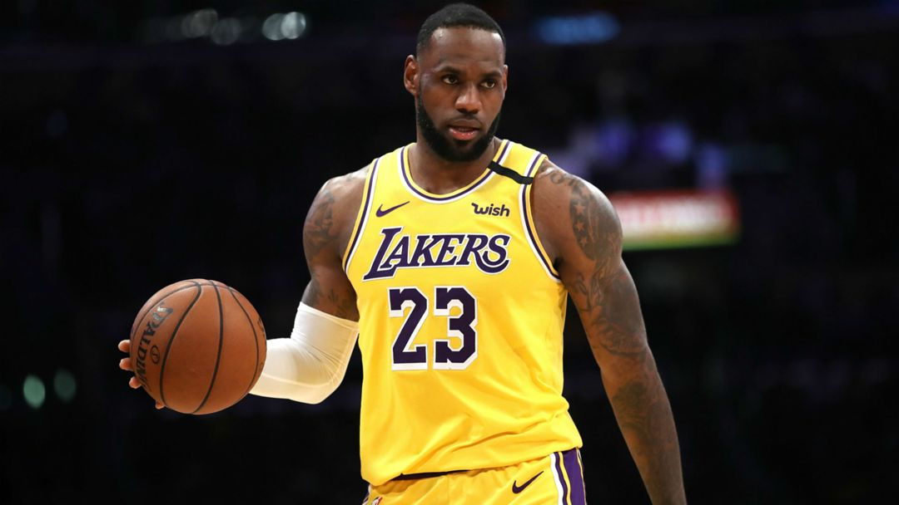
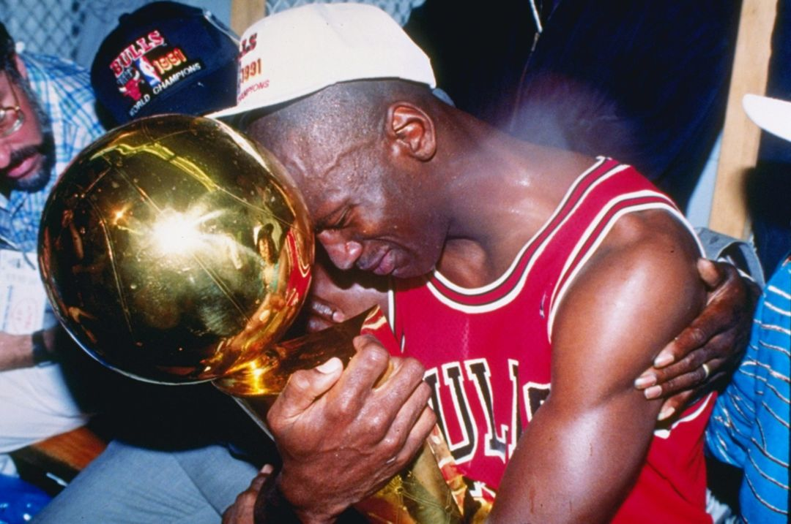

Michael Jordan vs. LeBron James: The key stats you need to know in the GOAT debate
The ESPN documentary series "The Last Dance" showed a younger generation of NBA fans that Michael Jordan is much more than a guy who sells retro sneakers. For those who witnessed Jordan's greatness over the course of two three-peats with the Bulls, it reinforced the belief he is the greatest player to ever touch the court.
A current star has complicated that GOAT (greatest of all time) conversation, of course. There is an argument to be made for putting LeBron James over Jordan, and James' case only grew stronger after he led the Lakers past the Heat in the 2020 NBA Finals.
MORE: The greatest MJ game you definitely don't remember
The Sporting News' Bill Bender has a helpful guide with the most important talking points if you're ready to discuss MJ vs. LeBron, but we're simply here to provide the facts you need to justify your choice. Don't be the person yelling "six rings" with no backup plan.
Here's a closer look at where the GOAT debate stands . . .
(All stats current as of Jan. 24, 2022)
Michael Jordan vs. LeBron James: Regular season stats
Jordan is superior in the scoring department, but James grabs rebounds and dishes out assists at a higher rate. While both players are known for tenacious defense on the wing, Jordan finished first in the league in steals three times in his career. James has not yet claimed a steals title.
In terms of longevity, James holds a clear advantage. The gap in total numbers will widen as long as James stays healthy, and he doesn't appear to be slowing down at age 36.
Jordan Per Game LeBron
- 30.1 Points 27.0
- 6.2 Rebounds 7.4
- 5.3 Assists 7.4
- 2.3 Steals 1.6
- 0.8 Blocks 0.8
- 2.7 Turnovers 3.5
- 38.3 Minutes 38.2
- 49.7 Field goal % 50.4
- 32.7 3-point % 34.5
- 83.5 Free throw % 73.4
Jordan Total LeBron
- 1,072 Games 1,345
- 32,292 Points 36,381
- 6,672 Rebounds 10,020
- 5,633 Assists 9,917
- 2,514 Steals 2,119
- 893 Blocks 1,020
- 2,924 Turnovers 4,703
- 41,011 Minutes 51,340
Jordan is superior in the scoring department, but James grabs rebounds and dishes out assists at a higher rate. While both players are known for tenacious defense on the wing, Jordan finished first in the league in steals three times in his career. James has not yet claimed a steals title.
Jordan is superior in the scoring department, but James grabs rebounds and dishes out assists at a higher rate. While both players are known for tenacious defense on the wing, Jordan finished first in the league in steals three times in his career. James has not yet claimed a steals title.
Jordan is superior in the scoring department, but James grabs rebounds and dishes out assists at a higher rate. While both players are known for tenacious defense on the wing, Jordan finished first in the league in steals three times in his career. James has not yet claimed a steals title.
Jordan is superior in the scoring department, but James grabs rebounds and dishes out assists at a higher rate. While both players are known for tenacious defense on the wing, Jordan finished first in the league in steals three times in his career. James has not yet claimed a steals title.
Jordan is superior in the scoring department, but James grabs rebounds and dishes out assists at a higher rate. While both players are known for tenacious defense on the wing, Jordan finished first in the league in steals three times in his career. James has not yet claimed a steals title.
Jordan is superior in the scoring department, but James grabs rebounds and dishes out assists at a higher rate. While both players are known for tenacious defense on the wing, Jordan finished first in the league in steals three times in his career. James has not yet claimed a steals title.
Michael Jordan vs. LeBron James: Playoff stats
The playoff statistics mirror what Jordan and James produce during the regular season. Despite James' increased usage and efficiency from beyond the arc over the course of his career, it's worth noting he shoots about the same percentage as Jordan from 3-point range.
Oh, and the lazy narrative claiming James shrinks in big games — his postseason lines are often more impressive than his regular-season performances. That's not a smart way to argue against him.
Jordan Playoffs Per Game LeBron
- 33.4 Points 28.7
- 6.4 Rebounds 9.0
- 5.7 Assists 7.2
- 2.1 Steals 1.7
- 0.9 Blocks 0.9
- 3.1 Turnovers 3.7
- 41.8 Minutes 41.5
- 48.7 Field goal % 49.5
- 33.2 3-point % 33.7
- 82.8 Free throw % 74.0
Jordan Playoff Totals LeBron
- 179 Games 266
- 5,987 Points 7,631
- 1,152 Rebounds 2,391
- 1,022 Assists 1,919
- 376 Steals 454
- 158 Blocks 252
- 546 Turnovers 975
- 7,474 Minutes 11,035
Michael Jordan vs. LeBron James: Accolades and awards
And here's the big one. Jordan fans have championships in their back pockets. MJ went a perfect 6-0 in the NBA Finals and never needed a Game 7 to win those series.
James has gone 4-6 in his 10 NBA Finals appearances, but he also controlled the Eastern Conference with the Cavaliers and Heat for almost an entire decade.
Jordan Accolades LeBron
- 6 Championships 4
- 5 MVPs 4
- 6 Finals MVPs 4
- 11 All-NBA 17
- 9 All-Defense 6
- 14 All-Star 17
- 10 Scoring titles 1